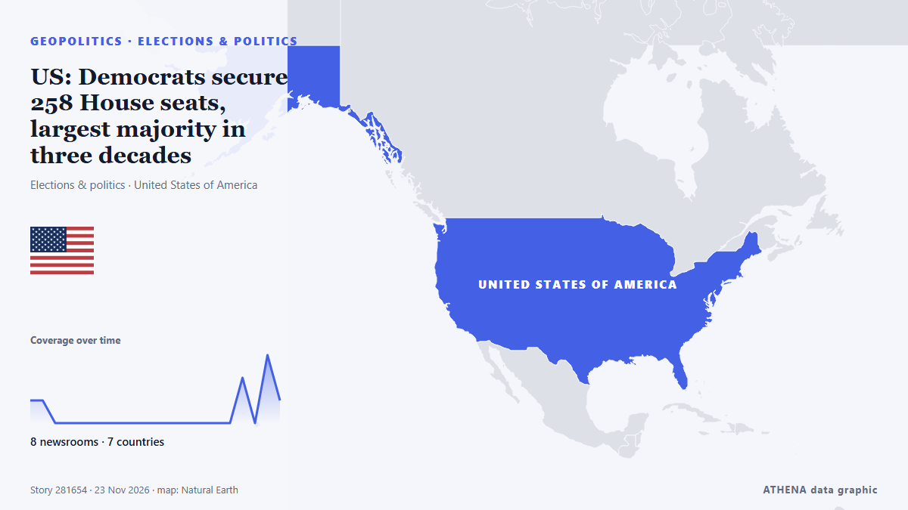

Εκλογές & πολιτική
ΧορηγούμενοΠαρουσιάζεται από  Cybernetics and Artificial Intelligence Lab Welcome to the Cybernetics and Artificial Intelligence Laboratory, established at the Department of Business Administration of the National and Kapodistrian University of Athens. The lab is headed by Professor Dimitrios Thomakos. The lab aims to do research that can be published in top venues. Our research uses tools and methods of Artificial Intelligence, and lies in the following areas: - Forecasting - Decision making - Cyber security - Finance We are always looking forward to collaborating with exceptional students!
Cybernetics and Artificial Intelligence Lab Welcome to the Cybernetics and Artificial Intelligence Laboratory, established at the Department of Business Administration of the National and Kapodistrian University of Athens. The lab is headed by Professor Dimitrios Thomakos. The lab aims to do research that can be published in top venues. Our research uses tools and methods of Artificial Intelligence, and lies in the following areas: - Forecasting - Decision making - Cyber security - Finance We are always looking forward to collaborating with exceptional students!
| 10 Νοε | 0 |
|---|---|
| 11 Νοε | 0 |
| 12 Νοε | 0 |
| 13 Νοε | 1 |
| 14 Νοε | 0 |
| 15 Νοε | 0 |
| 16 Νοε | 0 |
| 17 Νοε | 1 |
| 18 Νοε | 2 |
| 19 Νοε | 8 |
| 20 Νοε | 5 |
| 21 Νοε | 2 |
| 22 Νοε | 1 |
| 23 Νοε | 0 |
Οι τίτλοι των ειδήσεων παρουσιάζονται στα αγγλικά, όπως δημοσιεύτηκαν.

Democrats secure 258 House seats, largest majority in three decades
<p>Democrats have secured 258 seats in the US House of Representatives, marking the largest majority won by either party in the lower chamber in a general election in three decades, CBS News… από Gulf News
Just accept Brexit and move on, Theresa May urges Andy Burnham
The Tory peer said talks with the EU consume vast amounts of government time and resources. από The Irish News (Belfast)
El Salvador's Bukele to run for third presidential term
Last year, the Central American nation amended its constitution to abolish presidential term limits and allow Bukele, in power since 2019, to seek reelection indefinitely. από Le Monde (English)
French ex-PM Villepin announces presidential run
France's former prime minister and foreign minister Dominique de Villepin, famed abroad for his excoriating 2003 denunciation of US plans for invading Iraq, said Friday he was running for president. από The Local France
UK anthem returns to the EU stage in symbolic post-Brexit moment
UK Prime Minister Andy Burnham was welcomed by EU leaders in Brussels for a summit aimed at strengthening post-Brexit relations. από Euronews English
US religious freedom panel says India is targeting minorities in voter roll revisions
Data shows the omissions disproportionately affect Muslims, who have faced what rights groups describe as exclusionary policies and rising discrimination since Narendra Modi's Hindu nationalist BJP… από The Business Standard (Bangladesh) (working feed)
UK and EU strike ‘landmark’ deal to rebuild ties after Brexit
🇬🇧🇪🇺 A fresh start after #Brexit? The #UK and #EU have agreed on a landmark #deal to rebuild ties, following a summit in Brussels this Friday. από France 24 English
Crime Costs Brazil US$74B as Lula Waits
Lula says he will name ministers on his own timetable, while a new study puts the 2025 cost of crime in Brazil at about US$74 billion, or 3.5% of GDP. από The Rio Times
‘Everyone should leave’: Farage takes Brexit battle back to Brussels
Farage accused the UK's prime minister of breaking Labour’s pledge not to rejoin the single market. από Euractiv
Saudi Arabia Ranks First Globally in Digital Government Services, Achieving Vision 2030 Target
The Kingdom ranks first among 194 countries and territories assessed by the United Nations for online government services and rises to fourth place worldwide in overall e-government development… από Tirana Times
Spanish PM Sanchez admits to 'mistakes' 10 days before elections
Socialist Prime Minister Pedro Sanchez was attacked over his track record by his conservative rival, Alberto Nuñez Feijoo, during a televised debate on Thursday. από Le Monde (English)
French 2027 presidential race: Green leader Tondelier draws closer to hard-left Mélenchon
Six months before the first round of France’s presidential election, Green party leader Marine Tondelier is moving closer to Jean-Luc Mélenchon, the leader of the radical left. από France 24 English
Nigeria moves to end jail terms for attempted suicide
Nigeria's proposed reform follows years of calls from psychiatrists and a parallel Senate bill. από BBC News
DOJ seeks to dismiss Alaska election certification lawsuit
Federal lawyers asked an appeals court to drop its lawsuit asking to block the certification of Alaska' s Senate election. από UPI World News
PM Pashinyan: Preliminary draft of Armenia's new constitution will publicized next week
The preliminary draft of Armenia's new constitution will be made public next week, Prime Minister Nikol Pashinyan announced at Thursday’s Cabinet meeting of the Armenian government. από NEWS.am (English)
Congress has decimated idea of BJP: Rahul Gandhi
Washington: Congress leader Rahul Gandhi has said that his party has decimated the idea of the BJP politically and the effect will be seen over the next eight months. από Deccan Herald
Trump says no rush on Iran decision, looks to next year
US President Donald Trump on Thursday appeared to push a decision on renewed major strikes against… από BusinessWorld
Tashima says no plan 'at this point' to step aside in FIFA election race
Kozo Tashima said he had no immediate plans to withdraw from the Fifa presidential race, despite European backing for Philippe Diallo as the stronger challenger to Gianni Infantino. από Free Malaysia Today